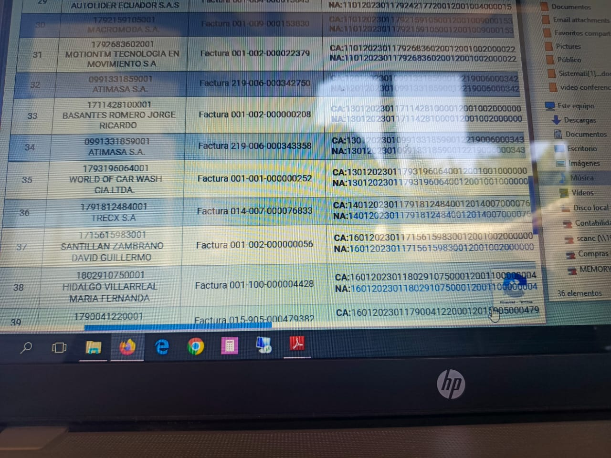
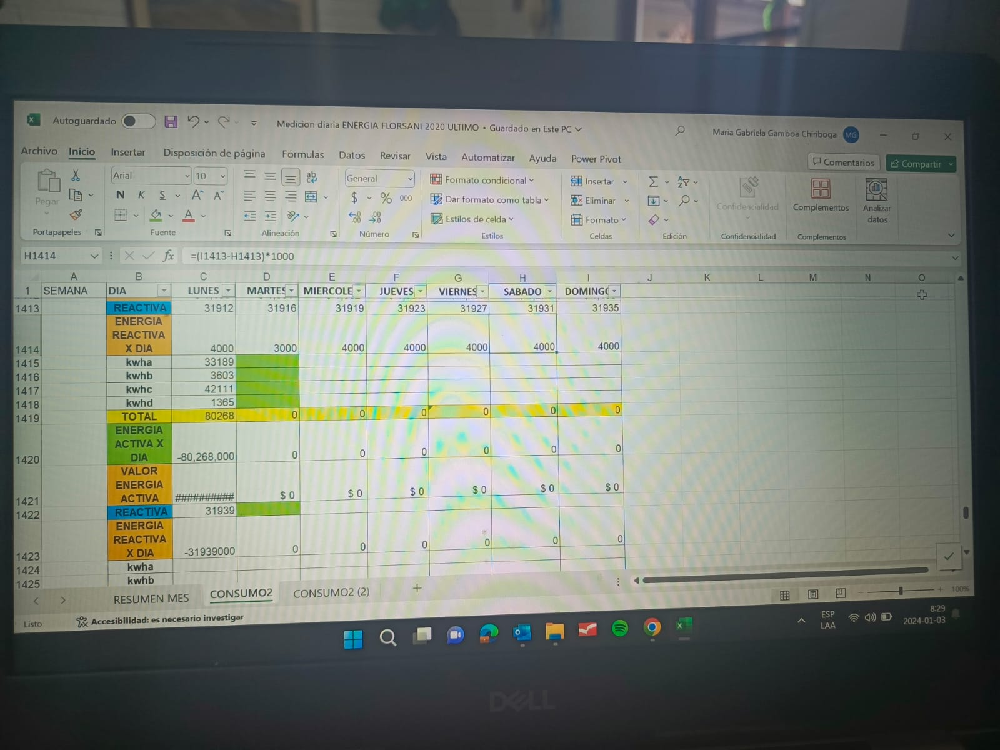
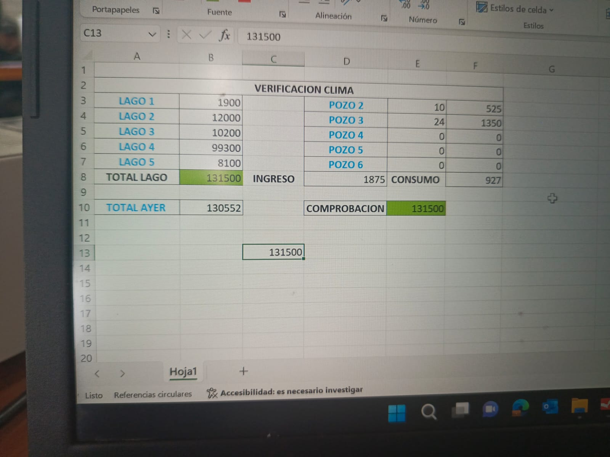

Redacción de las prácticas profesionales
NOMBRE:Fernanda Cuases CURSO:3ro Técnico FECHA:16.02.2024
Pasantias
| En la empresa que realice las practicas se llama FLORICOLA SAN ISIDRO "FLORSANI"
El primer día de las practicas me sentia muy nerviosa porque no sabia a que situaciones me iva a precentar
Pues para mi es algo muy satisfactorio ya que e aprendido a como trabaja la empresa ,en distintas oficinas
|
| Aqui ingresamos a una nueva página que se llama SRI y esto me enseñó la señora Mayra esta es la página en la trabaja la empresa y sirve para descargar facturas de gastos de la empresa y cada uno de
los vendedores. Esto consistía en que yo debía descargar cada una de las facturas con los comprobantes y poner el código que ya venía con su respectivo proveedor.
|

|
| Esta es una tabla realizada en excel esto se trataba de saber la energía activa y la energía
reactiva de cada uno de los pozos y en lo cual se clasificaba en el pozo 2,pozo 3 ,pozo 4,pozos 5,y pozos 6.
Y en esta tabla devia ingresar 5 Cantidades para que pueda salir el resultado de las energías,en lo cual también constaba en comprobar el resultado, con
los datos que me dictaba el Sr. José Lius Flores,en esta tabla toca ingresar datos diariamente ya que con el transcurso del tiempo saben los rendimientos
de los pozos y asi saber si se pasa o no del presupuesto que tiene establecida en el área de mantenimiento
|

| Esta también es una de las tablas en donde tenía que ingresar los datos y sacar el comprobante y ver si está bien.Esto tenía que hacer todos los
días llamarle de 8 a 10 de la mañana al Sr. José Luis Flores, a esa hora era cuando ya tenía los datos listos.
Aquí se actualizaban los datos cada día ya que nos servía para saber si está bien los resultados, luego tocaba enviar en un mensaje ya estructurado
como horas trabajadas, rendimiento de los posos ,energía activa y reactiva etc,
ya que eran datos gerenciales y enviados a toda la empresa
|

|